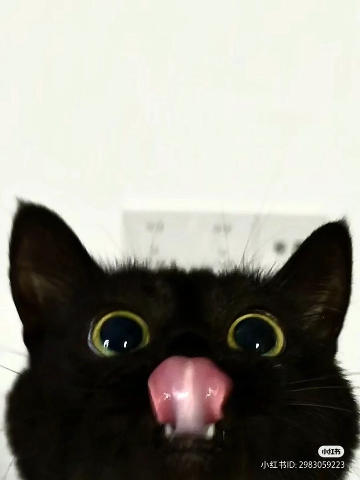

All about Cat
Cats are curious, routine‑loving animals that communicate a lot through body language. Their behavior can look “mysterious,” but most actions are tied to basic needs: safety, territory, comfort, play, and social connection.
{kind=link}

How cats communicate
- Tail: upright tail often means friendly/comfortable; a puffed tail signals fear; a slowly swishing tail can mean irritation or intense focus.
- Ears: forward ears show interest; flattened ears usually mean stress or defensiveness.
- Eyes: slow blinking is a sign of trust; a hard stare can be a warning.
- Vocalizing: meows are often directed at people; purring can mean contentment but can also appear when a cat is anxious or soothing themself.
Common behaviors and what they mean
Kneading (“making biscuits”)
Often seen when a cat feels safe and relaxed. It’s a comfort behavior many cats keep from kittenhood.
Scratching
Scratching is normal and helps cats stretch, shed old claw layers, and mark territory with scent glands in their paws.
Grooming
Cats groom to stay clean and regulate stress. Over‑grooming (bald patches, irritated skin) can be a sign of anxiety, parasites, or allergies.

Play and “zoomies”
Short bursts of running and pouncing are typical, especially in the evening. Play also practices hunting skills.
Hiding
Hiding is a common coping strategy when a cat feels overwhelmed or unwell. A sudden change toward hiding more than usual can be worth monitoring.
Social behavior
Cats vary widely: some are very social, others prefer distance. Many cats show affection by:
- rubbing their face/body against people or furniture (scent marking)
- following a person from room to room
- sitting nearby rather than on a lap
Triggers for behavior changes
A cat’s behavior can shift with:
- new people/animals, moving, loud noise, or schedule changes
- boredom or lack of play
- pain or illness (often subtle)
If a cat’s behavior changes suddenly—especially appetite, litter box use, or aggression—it can help to rule out medical causes first.
Supporting healthy behavior
- Provide scratching options (vertical and horizontal) and reward use.
- Offer daily play with wand toys to mimic hunting.
- Keep litter boxes clean and easy to access.
- Give safe spaces (beds, boxes, high perches) and predictable routines.
- Use positive reinforcement; avoid punishment, which often increases fear and stress.